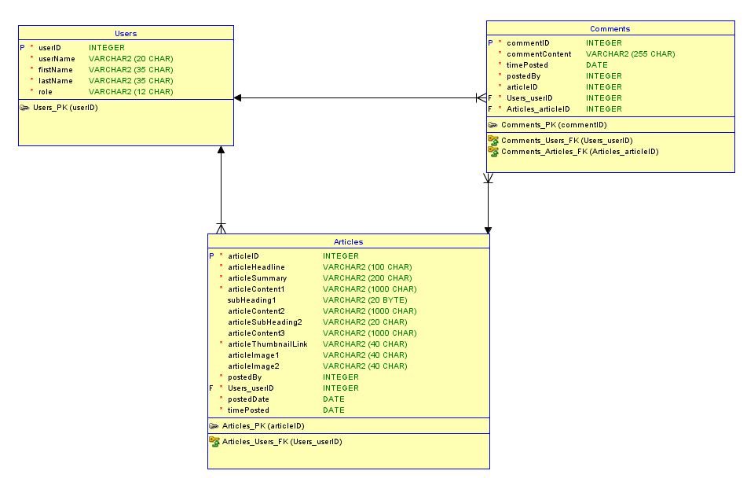

In my database design I tried to streamline it as much as possible although as there can be multiple sections of text I decided to split them off into subheadings within the articles table. By setting all but the initial one as optional, if there is a story that has just broken, it can be added to the site without a full set of text. For the other tables, there is just the basic information required for it to function.
The design meets 3NF as each of the tables only has information relating to the primary key within it and doesn’t hold extra eg.
In the user details, the only details that are held are the username, first and last name and the role of a user which all tie in with the primary key which is the userID.
Within the comments, besides the foreign keys which are the userID and articleID (To allow joins and such to work and to identify which comment belongs where) it only records the content and the time that it was posted which all relate.
Finally with the article table, there are a number of sub-sections such as “content2” but these are all part of the article in case it is fairly large and is broken up with images. This will allow the content to flow better within the pages as it can be organised much better in smaller blocks, rather than throwing the entire article onto the page at once. I believe this is suitable as each column will be dependant on the primary key and breaking it down further won’t be of benefit as if we delete the article, we want all of the content gone.
When creating a summary, I will want a user to enter this separately instead of generating it from the article text as this will give the user posting some freedom to put a unique summary in which may get a users attention better, rather than it being the first line or two of the article. This means that an end user is more likely to stay on the site than just go elsewhere for their news.